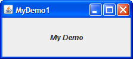

Use la información en esta lección y el componente secciones cómo para ayudarle a completar estas preguntas y ejercicios.
1. Encuentre el componente que encaje mejor en cada una de las siguientes necesidades. Escriba el nombre común del componente (como "marco") y busque la página de instrucciones del componente en línea.
a. Un componente que permita al usuario elegir un color.
b. Un componente que muestre un icono, pero que no reaccione a los clics del usuario.
c. Un componente que parezca como un botón y que, cuando sea presionado, haga aparecer un menú de elementos
para que el usuario elija.
d. Un contenedor que parezca como un marco, pero que aparezca (usualmente con otros, contenedores similares)
con un marco real.
e. Un contenedor que permita al usuario determinar cómo dos componentes comparten una cantidad limitada de
espacio.
2. ¿Qué método usa para añadir una barra de menú a un contenedor de nivel superior tal como un JFrame?
3. ¿Qué método usa para especificar el botón por defecto para un contenedor de nivel superior tal como un
JFrame o un JDialog?
4. ¿Qué método usa para habilitar o deshabilitar componentes tales como los JButtons? ¿En qué
clase está definida?
5. a. ¿Qué componentes de Swing usan ListSelectionModel? [Consejo: El enlace
"Uso" en la parte superior de la especificación para cada interfaz y clase le lleva a una página que
le muestra dónde se referencia a ese interfaz o clase en la IPA.]
b. ¿Los componentes usan otros modelos para manejar otros aspectos del estado del componente? Si es así, liste los otros tipos de modelos.
6. ¿Qué tipo de modelo almacena el contenido de un campo de texto?
1. Implemente un programa con una IGU que se vea como la que se muestra abajo. Coloque el método main en una
clae llamada MyDemo1.

2. Haga una copia de MyDemo1.java llamada MyDemo2.java. Agregue una barra de menús a
MyDemo2.
3. Copie MyDemo1.java a MyDemo3.java. Agregue un botón (JButton) a
MyDemo3.java. Hágalo el botón por defecto.